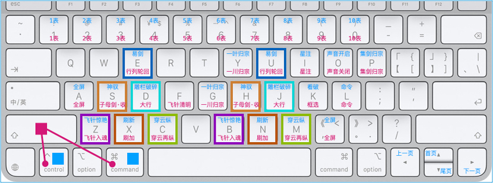

神意夺心爪
简称：神意
石壁有字
《神意夺心爪》
划破长空影，上品神爪功。
内劲运于掌，隔空意夺心。
神意夺心爪

此功能画面太多，图片不足以表现，抖音西瓜、微信的视频号，搜 ca3wBEST / ca3w麦修行 看视频
神意夺心爪，全名：神意夺心超爪（神意夺心 超级厉害的 爪）
神意夺心爪=SEDXZ、神意夺心超爪=SEDXCZ，主键区的几个键，经常用的
| 区域 | 招式 | 说明 | 快捷键 | 这样记 | 备用键 |
|---|---|---|---|---|---|
| 神 S | 神驭 | 神驭开启 | 🎹 + S | 神驭的神 Shén S | S => H |
| 神 S | 子剑东流 | 子母剑·收 | 🎹 + Shift + S | 收剑的收 Shōu S | S => H |
| 意 E | 基本功 | 易剑 | 🎹 + E | Excel的易 E | E => U |
| 意 E | 基本功 | 行列轮回 | 🎹 + Shift + E | Excel的易 E | E => U |
| 夺 D | 雕栏破碎 | 🎹 + D | 雕栏的雕 Diāo D | D => J | |
| 夺 D | 基本功 | 大行 | 🎹 + Shift + D | 大行的大 Dà D | D => J |
| 心 X | 基本功 | 刷新 | 🎹 + X | X 就像台词「叉出去」 | X => N |
| 心 X | 基本功 | 刷加 | 🎹 + Shift + X | X 叉掉数据=刷掉数据 | X => N |
| 超 C | 穿云纵 | 🎹 + C | 穿云的穿 Chuān C | C => M | |
| 超 C | 穿云再纵 | 🎹 + Shift + C | 穿云的穿 Chuān C | C => M | |
| 爪 Z | 飞针惊艳 | 🎹 + Z | 飞针的针 Zhēn Z | Z => B | |
| 爪 Z | 飞针入魂 | 🎹 + Shift + Z | 飞针的针 Zhēn Z | Z => B | |
| 编外 | 基本功 | 全屏 | 🎹 + A | All A | A => , |
| 编外 | 基本功 | 全屏 | 🎹 + Shift + A | All A | A => , |
| 编外 | 飞针清明 | 🎹 + Shift + F | 飞针的飞 Fēi F | ||
| 编外 | 一叶归宗 | 🎹 + G | 归宗的归 Guī G | G => Y | |
| 编外 | 一川归宗 | 🎹 + Shift + G | 归宗的归 Guī G | G => Y | |
| 编外 | 基本功 | 星注 | 🎹 + I | i=星号注释 | |
| 编外 | 基本功 | 星注 | 🎹 + Shift + I | i=星号注释 | |
| 编外 | 基本功 | 看破 | 🎹 + K | 看破的看 Kàn K | |
| 编外 | 基本功 | 框选 | 🎹 + Shift + K | 框选的框 Kuang K | |
| 编外 | 基本功 | 声音开启 | 🎹 + O | 🤫嘘，嘴形是O | |
| 编外 | 基本功 | 声音关闭 | 🎹 + Shift + O | 🤫嘘，嘴形是O | |
| 编外 | 基本功 | 命令 | 🎹 + L | 命令的令 Lìng L | |
| 编外 | 基本功 | 命令 | 🎹 + Shift + L | 命令的令 Lìng L | |
| 编外 | 集剑归宗 | 🎹 + P | |||
| 编外 | 集剑归宗 | 🎹 + Shift + P | |||
| 编外 | 基本功 | 上一页 | 🎹 + ⇦ | ||
| 编外 | 基本功 | 下一页 | 🎹 + ⇨ | ||
| 编外 | 基本功 | 首页 | 🎹 + ⇧ | ||
| 编外 | 基本功 | 尾页 | 🎹 + ⇩ | ||
| 编外 | 基本功 | 1表 | 🎹 + 1 | 1表 | |
| 编外 | 基本功 | 1表 | 🎹 + Shift + 1 | 1表 | |
| 编外 | 基本功 | 2表 | 🎹 + 2 | 2表 | |
| 编外 | 基本功 | 2表 | 🎹 + Shift + 2 | 2表 | |
| 编外 | 基本功 | 3表 | 🎹 + 3 | 3表 | |
| 编外 | 基本功 | 3表 | 🎹 + Shift + 3 | 3表 | |
| 编外 | 基本功 | 4表 | 🎹 + 4 | 4表 | |
| 编外 | 基本功 | 4表 | 🎹 + Shift + 4 | 4表 | |
| 编外 | 基本功 | 5表 | 🎹 + 5 | 5表 | |
| 编外 | 基本功 | 5表 | 🎹 + Shift + 5 | 5表 | |
| 编外 | 基本功 | 6表 | 🎹 + 6 | 6表 | |
| 编外 | 基本功 | 6表 | 🎹 + Shift + 6 | 6表 | |
| 编外 | 基本功 | 7表 | 🎹 + 7 | 7表 | |
| 编外 | 基本功 | 7表 | 🎹 + Shift + 7 | 7表 | |
| 编外 | 基本功 | 8表 | 🎹 + 8 | 8表 | |
| 编外 | 基本功 | 8表 | 🎹 + Shift + 8 | 8表 | |
| 编外 | 基本功 | 9表 | 🎹 + 9 | 9表 | |
| 编外 | 基本功 | 9表 | 🎹 + Shift + 9 | 9表 | |
| 编外 | 基本功 | 10表 | 🎹 + 0 | 10表 | |
| 编外 | 基本功 | 10表 | 🎹 + Shift + 0 | 10表 |
🎹 Windows 代表 Control， macOS 代表 Control 或 Command
现实世界
认证机构信息管理系统 中的 「快捷键」
武侠世界
赵匡胤的心腹爱将、曹彬的独门武功
术语对照
| 武学术语 | 系统术语 | 说明 |
|---|---|---|
| 神意夺心爪 | 快捷键 |
作者笔记
九阴白骨爪 = 抠脑袋
神意夺心爪 = 抓心脏
超级厉害，所以：神意夺心超爪
神意夺心超爪=SEDXCZ
🎹+键、🎹+Shift+键
S=神(Shén)驭、字母剑·收(Shōu)
E=Excel，易剑、行列轮回
D=雕(Diāo)栏破碎、大(Dà)行
X=新(Xīn)，刷新、刷加
C=穿(Chuān)云纵、穿(Chuān)云再纵
Z=针(Zhēn)，飞针惊艳、飞针入魂
记不住也没关系，随便按按试一试，反正你也按不坏，习惯了就记住了
command键 是 MacBook 苹果电脑里面才有的 有点相当于 control键
如果你用的是 Windows 这样理解 command键 就是 control键 就行了
🎹+A、🎹+X，这种按键的使用，不会影响全选、剪切的正常按键功能
系统会智能的判断你按键的情形，如果选中文本，识别为正常按键功能